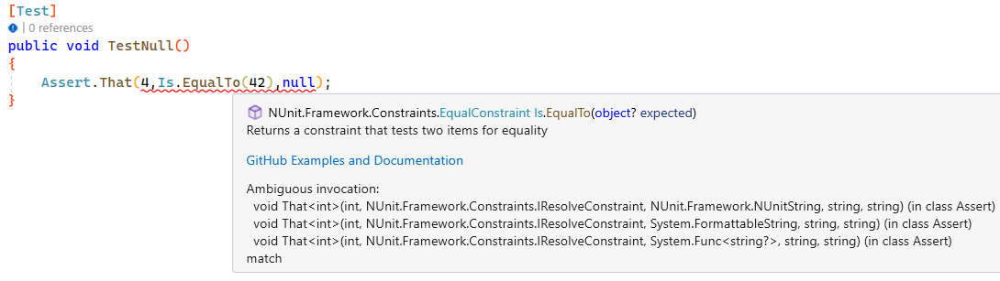

Towards NUnit Version 4
NUnit 4 has been long-awaited, and we are now starting to see its outline taking shape. With the introduction of NUnit 4, we are also making changes to the release cadence, shifting towards a Semver based versioning scheme. This entails aiming to release version 4 as soon as possible and subsequently accelerating the pace of new major releases compared to previous versions.
We'd like to bring your attention to several interesting aspects of NUnit 4.
- First and foremost, there is a crucial NUnit 4 planning issue that we want to highlight.
- Additionally, we have an upcoming release notes page, currently in the form of a PR (Pull Request).
- If you're interested in changes related to supported frameworks and assert messages, we've compiled a list of issues for your reference.
- We have also created a Migration Guide starting with 4.x that we hope will assist in navigating any breaking changes.
Moreover, we have created a milestone for version 4, which you can find a list of open issues for here. This milestone could be useful in tracking the progress and development of version 4.
Now to some highlights -- not necessarily in chronological order.
Improved Assert Result Messages
Failure result messages now include the Assert statement that was used.
Earlier code like:
[TestCase(42)]
public void TestInt(int val)
{
Assert.That(val, Is.EqualTo(4));
}
resulted in:
Message:
Expected: 4
But was: 42
Not a very descriptive message.
In version 4 this is improved to also include the assert statement itself.
The result will then be:
Message:
Assert.That(val, Is.EqualTo(4))
Expected: 4
But was: 42
This also handles more complex statements, like for the following code:
[Test]
public void TestDouble()
{
var sut = new Math();
Assert.That(sut.Add(4.0, 2.0), Is.EqualTo(42.0).Within(0.1d), "Add double failed");
}
which then results in:
Message:
Add double failed
Assert.That(sut.Add(4.0, 2.0), Is.EqualTo(42.0).Within(0.1d))
Expected: 42.0d +/- 0.10000000000000001d
But was: 6.0d
Off by: 36.0d
Note that the custom message is added before the Assert statement
Including the Assert statement that caused the failure becomes particularly valuable in scenarios involving Multiple Asserts. In such cases, with a list of results from various asserts, it can be challenging to determine precisely which assert is responsible for each message. The improved result messages now offer clearer insights, making it easier to identify the specific assert that led to each failure.
Given the code:
[Test]
public void TestMultiple()
{
var x = 2;
Assert.Multiple(() =>
{
Assert.That(x*2, Is.EqualTo(42));
Assert.That(x*1+40, Is.EqualTo(42));
Assert.That(x*3+42, Is.EqualTo(42));
});
}
which in version 3 results in:
Message:
Multiple failures or warnings in test:
1) Expected: 42
But was: 4
2) Expected: 42
But was: 48
This is with only 3 asserts hard to figure out, but with version 4 we get:
Message:
Multiple failures or warnings in test:
1) Assert.That(x*2, Is.EqualTo(42))
Expected: 42
But was: 4
2) Assert.That(x*3+42, Is.EqualTo(42))
Expected: 42
But was: 48
Breaking change
- Please be aware of a breaking change regarding assert messages in NUnit. The previous format with params args is no longer supported. If you require a similar message format, it is now necessary to convert it to an interpolated string.
Developer details
The improved result messages have been implemented using the new CallerArgumentExpression together with using a FormattableString as the class for the message.
Proper async/await, you can now await the Asserts
NUnit 3 has implemented async functionality using a pattern called 'sync-over-async.' This approach allowed for its implementation without requiring significant underlying changes.
In version 4 proper async/await has been implemented with a series of new assert methods, Assert.ThatAsync which can
be await'ed.
[Test]
public async Task AssertionPasses_CompletedTaskWithResult_EqualsResult()
{
await Assert.ThatAsync(() => Task.FromResult(42), Is.EqualTo(42));
}
Version 4 also introduces a new feature called Assert.MultipleAsync, which allows you to mix async and sync asserts within the same block. This enables you to perform multiple assertions, both asynchronous and synchronous, in a more concise and streamlined manner. Moreover, it's important to note that Assert.MultipleAsync is awaitable, providing flexibility in handling asynchronous operations and assertions.
[Test]
public async Task AssertMultipleAsyncSucceeds()
{
await Assert.MultipleAsync(async () =>
{
await Assert.ThatAsync(() => Task.FromResult(42), Is.EqualTo(42));
Assert.That("hello", Is.EqualTo("hello"));
await Assert.ThatAsync(() => Task.FromException(new ArgumentNullException)), Throws.ArgumentNullException);
});
}
Cooperative Cancellation
For later versions of .NET it is not possible to abort a hanging thread -- and even though it's technically allowed in
the classic .NET Framework, it prevents finally clauses and other cleanup routines from running.
Cancellation is supposed to be done in a cooperative way.
To achieve this in NUnit v4, we introduce a CancelAfter Attribute
Nullability
Version 4 has implemented stricter nullability throughout the codebase. While there are still some areas that require fixing, overall, it should now conform to the nullability requirements. See 3376 for details.
These changes, along with the improved assert messages, have resulted in null values no longer being allowed for messages. As a consequence, code like the example below will not compile and will result in CS0121):
 It's important to update such code to use valid non-null message strings
Platform support
The lowest framework platforms support in Version 4 are .net framework 4.6.2 and .net 6.0.
Classic/Legacy asserts
The classic/legacy asserts, like Assert.AreEqual, have now been moved into their own project, and will later be
released as a separate package. They are now in the namespace NUnit.Framework.Legacy, and the Assert class has been
renamed to ClassicAssert. In the early V4 versions they will be delivered in the standard NUnit package.
This means that the default assertion syntax going forward will be the "constraint-based" asserts.
See Assertions for more details.
Testing it out
We have development packages deployed to a Myget feed, and now we have also added a github packages feed. If you're using the latter you need to authenticate yourself, once that is done anyone can grab from that feed.
Myget
If you add our Myget source to your app's nuget feeds, you can try out the new features yourself.
Add or modify your nuget.config to add the package resources such as below:
<?xml version="1.0" encoding="utf-8"?>
<configuration>
<packageSources>
<clear/>
<add key="nuget" value="https://api.nuget.org/v3/index.json" />
<add key="Myget" value="https://www.myget.org/F/nunit/api/v3/index.json" />
</packageSources>
</configuration>
Then, replace your current NUnit PackageReference with:
<PackageReference Include="NUnit" Version="4.0.0-dev-07984" />
Github packages
Add or modify your nuget.config to add the package resources such as below:
<?xml version="1.0" encoding="utf-8"?>
<configuration>
<packageSources>
<clear/>
<add key="nuget" value="https://api.nuget.org/v3/index.json" />
<add key="Github" value="https://nuget.pkg.github.com/nunit/index.json" />
</packageSources>
</configuration>
Then, replace your current NUnit PackageReference with:
<PackageReference Include="NUnit" Version="4.0.0-alpha-8-g46eb5c5a1-pr-unknown" />
- Note: The versions should be the same, we're working on aligning the version numbers.
Feedback
We do appreciate feedback on these version 4 features.
You can join in on the discussion here, comment in our slack channel, or if it is a bug or suggestion for improvement you can also raise an issue in our github repo.